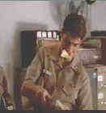

|
A Few Good Men/A-,A |
|
Columbia Tristar/1992/138m |
Though at times melodramatic and several measures too cute for its own good, Rob Reiner's adaptation of Aaron Sorkin's play is highly entertaining fare. Much credit must go to Reiner's fine direction. The pace is swift and while there are moments that one must question the logic leading to the results, the actors are very appealing. This is another fine role for Tom Cruise. You could call it Top Gun does law, but it's far beyond that. A dour Demi Moore is a perfect compliment to Cruise's ebullience. Jack Nicolson in the pivotal role of Colonel Jessup perhaps goes for the histrionics too much, but few will have great qualms about his testimony.
 |
|
Cruise at law. ©Columbia Tristar |
Another gorgeous disc from Columbia Tristar whose HDTV down converted transfers delivered anamorphic bring home theater as close to film as possible. Colors are saturated, motion clean, image sharp throughout. While not a flick demanding a big surround track, the Dolby Digital 2 channel is excellent and the dialogue crisp and clear.

The Feature Archive
has articles ranging from Akira
Kurosawa to Blonde Bimbos and John Ford.
Redeeming
the Writer:
A Conversation with Frank Darabont

Hail, Hail, the Gangs in Hollywood
From Angels with Dirty Faces to West Side Story to Menace II Society, Hollywood has depicted youth gangs as reflections of the times.